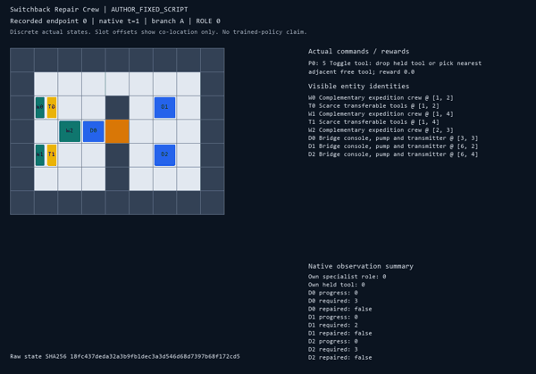
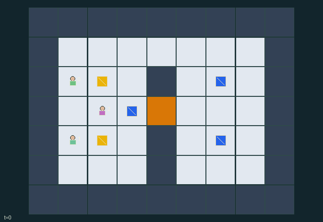

GI103 · Switchback Repair Crew

Original recording scope: Role view · Mode: Fixed-script demonstration
Additional generated state replay (different trajectory / full-state debug)

Repair the bridge console, prime the pump and restore the transmitter using the one wrench, one power cell and complementary worker capabilities.
Identity and original contract
3 independently actionable roles; 10 discrete commands per role; 110 native observation columns per role; original horizon 96 steps. Declared per-step reward range: 0 to 3. Observation regime: fully_observable.
Source SHA-256: d98dbe089d3ce8809102038f69d9fd15b489bc1986d2dadb267d4a45b15faef4
The objective, rewards, population, map and horizon remain original. A preview is not a success claim.
Objective and gameplay
Repair the bridge console, prime the pump and restore the transmitter using the one wrench, one power cell and complementary worker capabilities.
Tool possession is exclusive and transferable; engineer bridge work opens the physical central route. Pump priming requires simultaneous electrician work and another worker assistance on two consecutive ticks. Powered transmitter repair requires both specialists with their distinct tools to work together.
- Engineer, electrician and courier share the goal of repairing all three devices.
- There is one wrench and one power cell. Any worker can carry one tool; only matching specialists can do primary work.
- Toggle drops your tool or picks a free adjacent tool. Offer plus an adjacent empty-handed receive action lends a tool.
- Work and assist target the nearest unfinished device within one tile; ties use device order.
- Engineer with wrench repairs the bridge by one progress per tick, or two with simultaneous assistance. Three progress opens the central crossing.
- Electrician with power cell needs simultaneous assistance for two consecutive pump ticks. Missed timing removes one incomplete priming tick.
- After the pump is repaired, the transmitter needs three ticks of simultaneous engineer-with-wrench and electrician-with-cell work.
- The upper switchback is always open. The central crossing becomes usable after its actual map tile changes on bridge completion.
- Each newly repaired device gives every worker +1 once. Completing all three ends play; otherwise step 96 truncates.
- All state shown is public. Distinct worker cells, exclusive tools and deterministic simultaneous movement are enforced by the kernel.
Ending: All three devices repaired: bridge progress 3, pump 2 and transmitter 3. Otherwise horizon 96 truncates, with natural completion taking priority.
What this game explores
Resource commons & externalities: An action changes a persistent resource or burden that another role also encounters. Compare extraction with maintenance and record the downstream resource trajectory.
Complementary production & service: A useful outcome requires ordered stages, scarce equipment or another role's capability. Measure real completed products and resource circulation rather than counting intermediate actions as success.
Joint transport & shared access: Positions, load geometry, occupancy and persistent access constrain whose action can succeed next. Distinguish physical handoff, shared controls and simultaneous force from a cosmetic cooperation label.
These are questions supported by rule structure, not observed learning effects.
Play it: operating walkthrough
crucibles play --game gi103Keep Python running and open its printed address. Select this game, set a seed and press Create session. The game itself is always English.
Assign a role range to Host with Assign / take over, or Assign all roles. Invite a second participant with Create player invitation, then assign a disjoint subset. Every original role is available.
For every owned role choose a legal command and press Queue. Arrow keys / WASD queue a declared directional action for the current role camera when available. Space or Advance one joint step advances everyone together. Non-directional games use the selectors.
Unqueued roles use the labelled untrained uniform-legal policy. Take over or release roles before the next step without resetting. Full-state debug is privileged and permanently logged; role cameras preserve permissions. Close the session to retain logs. Server restart does not restore sessions.
Complete command reference
IDs and English labels exactly match the manifest. Availability depends on role, resources, location and phase. An available action can still have no productive effect.
0·Wait
1·Move north
2·Move east
3·Move south
4·Move west
5·Toggle tool: drop held tool or pick nearest adjacent free tool
6·Work on nearest adjacent unfinished device
7·Assist nearest adjacent unfinished device
8·Offer held tool to adjacent receiving worker
9·Receive an adjacent offered tool
Roles and capability identifiers
These original role names describe capabilities, not interchangeable skins. Check each owned role's legal selector before planning handoffs.
agent_0·Structural engineer: wrench-required bridge and transmitter work
agent_1·Electrician: power-cell-required pump and transmitter work
agent_2·Courier: transport either scarce tool and assist timed repairs
Information and observation permissions
Fully observable public map and all worker, tool, device and event state. Every entity visibility mask is true. Own role identity is additionally one-hot; float32 observations are integer features divided by 128.
The GIF is full-state debug and may reveal hidden entities or private state. Train on obs[agent], not the picture, state tree or another role's private row. Field slices and visibility are in the original manifest.
Reinforcement-learning integration
import jax
from crucibles_jaxmarl import make
env = make("gi103")
key = jax.random.PRNGKey(0)
key, rk, ak, sk = jax.random.split(key, 4)
obs, state = jax.jit(env.reset)(rk)
actions = env.sample_actions(ak, state)
obs, state, rewards, dones, info = jax.jit(env.step_env)(sk, state, actions)
done = dones["__all__"]Observations are float32 vectors of width 110; actions are scalar int32; masks have 10 entries. Supply all 3 roles each transition. Masked sampling is an engineering reference, not a trained learner.
step_env retains terminal data without reset. step performs outer autoreset and keeps terminal data in info["raw_state"] and info["raw_observation"]. Use dones["__all__"] for episode boundaries; separate completion, failure and time limit in analysis.
JIT or vmap equal identities and shapes. Split independent reset, policy and transition keys. Group different shapes explicitly; do not shrink the population or horizon. Host rendering stays outside training.
Training questions and fair evaluation
Define valid completion from the objective before fitting. Preserve original rewards and also report real deliveries/services, losses, resource state, unresolved episodes and per-role returns. Animation is not a reward signal.
An action changes a persistent resource or burden that another role also encounters. Compare extraction with maintenance and record the downstream resource trajectory.
A useful outcome requires ordered stages, scarce equipment or another role's capability. Measure real completed products and resource circulation rather than counting intermediate actions as success.
Positions, load geometry, occupancy and persistent access constrain whose action can succeed next. Distinguish physical handoff, shared controls and simultaneous force from a cosmetic cooperation label.
Compare memory, communication or centralized critics under matched actor information. Declare critic access; keep actor inputs role-filtered. Match partner/opponent distributions, masks, compute and checkpoint selection. Final tests never enter fitting or selection.
Independent training runs or source-pairing blocks are inferential units; episodes from one policy are not independent training replications. Save hashes, keys, versions, device, time and cost. Negative, zero, failed and indeterminate outcomes are valid. No trained checkpoint or target score is supplied.
Classification and evidence
Overlapping editorial labels are reading aids, not proof of novelty, difficulty, strategic equivalence or learning effects.
- Resource commons & externalities
- Evidence
manifest.task.objective: Repair the bridge console, prime the pump and restore the transmitter using the one wrench, one power cell and complementary worker capabilities.
- Complementary production & service
- Evidence
manifest.task.objective: Repair the bridge console, prime the pump and restore the transmitter using the one wrench, one power cell and complementary worker capabilities.
- Evidence
manifest.task.interaction: Tool possession is exclusive and transferable; engineer bridge work opens the physical central route. Pump priming requires simultaneous electrician work and another worker assistance on two consecutive ticks. Powered transmitter repair requires both specialists with their distinct tools to work together.
- Evidence
scene.rules.0: Engineer, electrician and courier share the goal of repairing all three devices.
- Joint transport & shared access
- Evidence
manifest.task.objective: Repair the bridge console, prime the pump and restore the transmitter using the one wrench, one power cell and complementary worker capabilities.
- Evidence
manifest.task.interaction: Tool possession is exclusive and transferable; engineer bridge work opens the physical central route. Pump priming requires simultaneous electrician work and another worker assistance on two consecutive ticks. Powered transmitter repair requires both specialists with their distinct tools to work together.
- Evidence
scene.rules.0: Engineer, electrician and courier share the goal of repairing all three devices.
Source, receipts and preview limits
The additional generated state GIF replays saved untrained legal actions through the original kernel. At most 25 actual endpoints include initial and terminal state; no invented interpolation. It is full-state debug, not the role observation. Where an original scene preview exists, it is displayed first with its own recorded information scope. The two recordings may use different trajectories and views.
Original source, observation slices, manifest and mechanism
Native receipt · Presentation receipt
Engineering passes do not establish learning. Nonzero floating differences remain recorded and undetermined; no new tolerance was introduced. Human scores remain unverified.